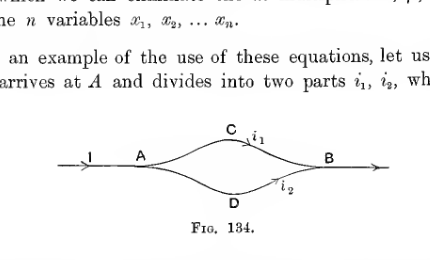
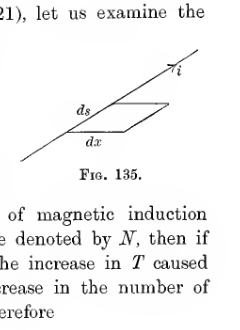

Chapter XVI#
Dynamical Theory of Currents#
General Theory of Dynamical Systems.#
541. We have so far developed the theory of electromagnetism by starting from a number of simple data which are furnished or confirmed by experiment, and examining the mathematical and physical consequences which can be deduced from these data.
There are always two directions in which it is possible for a theoretical science to proceed. It is possible to start from the simple experimental data and from these to deduce the theory of more complex phenomena. And it may also be possible to start from the experimental data and to analyse these into something still more simple and fundamental. We may, in fact, either advance from simple phenomena to complex, or we may pass backwards from simple phenomena to phenomena which are still simpler, in the sense of being more fundamental.
As an example of a theoretical science of which the development is almost entirely of the second kind may be mentioned the Dynamical Theory of Gases. The theory starts with certain simple experimental data, such as the existence of pressure in a gas, the relation of this pressure to the temperature and density of a gas, and the mathematical consequences of these simple data are developed by shewing that the phenomena may be regarded as consequences of the motion of molecules.
In our development of electromagnetic theory there has so far been but little progress in this second direction. It is true that we have seen that the attractions and repulsions of electric charges, and the induction of electric currents, may be interpreted as consequences of other and more fundamental phenomena taking place in the ether by which the material systems are surrounded. We have even obtained formulae for the stresses and the energy in the ether. But it has not been possible to proceed any further and to explain the existence of these stresses and energy in terms of the ultimate mechanism of the ether.
The reason why we have been brought to a halt in the development of electromagnetic theory will become clear as soon as we contrast this theory with the theory of gases. The ultimate mechanism with which the theory of gases is concerned is that of molecules in motion, and we know, or at least can provisionally assume that we know, the ultimate laws by which this motion is governed. On the other hand the ultimate mechanism with which electromagnetic theory is concerned is that of action in the ether, and we are in utter ignorance of the ultimate laws which govern action in the ether. We do not know how the ether behaves, and so can make no progress towards explaining electromagnetic phenomena in terms of the behaviour of the ether.
542. There is a branch of dynamics which attempts to explain the relation between the motions of certain known parts of a mechanism, even when the nature of the remaining parts is completely unknown. We turn to this branch of dynamics for assistance in the present problem. The whole mechanism before us consists of a system of charged conductors, magnets, currents, etc., and of the ether by which all these are connected. Of this mechanism one part, the motion of the material bodies, is known to us, while the remainder, the flow of electric currents, the transmission of action by the ether, etc., is unknown to us except indirectly by its effects on the first part.
543. An analogy, first suggested by Professor Clerk Maxwell, will explain the way in which we are now attacking the problem.
Imagine that we have a complicated machine in a closed room, the only connexion between this machine and the exterior of the room being by means of a number of ropes which hang through holes in the floor into the room beneath. A man who cannot get into the room which contains the machine will have no opportunity of actually inspecting the mechanism, but he can manipulate it to a certain extent by pulling different ropes. If on pulling one rope he finds that others are set into motion, he will understand that the ropes must be connected by some kind of mechanism above, although he may be unable to discover the exact nature of this mechanism.
In this analogy, the concealed mechanism is supposed to represent those parts of the universe which do not directly affect our senses, for instance the ether, while the ropes represent those parts which we can observe in motion, for instance material bodies. In nature, there are certain acts which we can perform, analogous to the pulling of ropes, and these are invariably followed by certain consequences, analogous to the motion of other ropes, but the ultimate mechanism by which the cause produces the effect is unknown. For instance, we may close an electric circuit by pressing a key, and the needle of a distant galvanometer is set into motion. We infer that there must be some mechanism connecting the two, but the nature of this mechanism is almost completely unknown.
Suppose now that an observer may handle the ropes, but may not penetrate into the room above to examine the mechanism to which they are attached. He will know that whatever this mechanism may be, certain laws must govern the manipulation of the ropes, provided that the mechanism is itself subject to the ordinary laws of dynamics.
To take the simplest illustration, suppose that there are two ropes only, \(A\) and \(B\), and that when rope \(A\) is pulled down a distance of one inch, it is found that rope \(B\) rises through two inches. The mechanism connecting \(A\) and \(B\) may be a lever or an arrangement of pulleys or of clockwork or something different from any of these. But whatever it is, provided that it is subject to the laws of dynamics, the experimenter will know, from the mechanical principle of virtual work, that the upward motion of \(B\) can be restrained by applying to \(B\) a force equal to half of that applied to \(A\).
544. The branch of dynamics of which we are now going to make use enables us to predict what relation there ought to be between the motions of the accessible parts of the mechanism. If these predictions are borne out by experiment, then there will be a presumption that the concealed mechanism is subject to the laws of dynamics. If the predictions are not confirmed by experiment, we shall know that the concealed mechanism is not governed by the laws of dynamics.
Hamilton’s Principle.#
545. Suppose first that we have a dynamical system composed of discrete particles, each of which moves in accordance with Newton’s Laws of Motion. Let any typical particle of mass \(m_1\) have at any instant coordinates \(x_1\), \(y_1\), \(z_1\), and components of velocity \(u_1\), \(v_1\), \(w_1\), and let it be acted upon by forces of which the resultant has components \(X_1\), \(Y_1\), \(Z_1\). Then, since the motion of the particle is assumed to be governed by Newton’s Laws, we have
Let us compare this motion with a slightly different motion in which Newton’s Laws are not obeyed. At the instant \(t\) let the coordinates of this same particle be \(x_1 + \delta x_1\), \(y_1 + \delta y_1\), \(z_1 + \delta z_1\) and let its components of velocity be \(u_1 + \delta u_1\), \(v_1 + \delta v_1\), \(w_1 + \delta w_1\). Let us multiply equations (490), (491) and (492) by \(\delta x_1\), \(\delta y_1\), \(\delta z_1\) respectively, and add. We obtain
Now
and similar equations hold for the terms involving \(v_1\) and \(w_1\).
If we sum equation (493) for all the particles of the system, replacing the terms on the left by their values as just obtained, we arrive at the equation
Let \(T\) denote the kinetic energy of the actual motion, and \(T + \delta T\) that of the slightly varied motion; then
so that
and this is the value of the second term in equation (494).
If \(W\) and \(W + \delta W\) are the potential energies of the two configurations, assuming the forces to form a conservative system, we have
and
and so the value of the right-hand member of equation (494) is \(-\delta W\).
We may now rewrite equation (494) in the form
This equation is true at every instant of the motion. Let us integrate it throughout the whole of the motion, say from \(t=0\) to \(t=\tau\). We obtain
The displaced motion has been supposed to be any motion which differs only slightly from the actual motion. Let us now limit it by the restriction that the configurations at the beginning and end of the motion are to coincide with those of the actual motion, so that the displaced motion is now to be one in which the system starts from the same configuration as in the actual motion at time \(t=0\) and, after passing through a series of configurations slightly different from those of the actual motion, finally ends in the same configuration at time \(t=\tau\) as that of the actual motion. Mathematically this new restriction is expressed by saying that at times \(t=0\) and \(t=\tau\) we must have \(\delta x = \delta y = \delta z = 0\) for each particle. Equation (495) now becomes
546. Speaking of the two parts of the mechanism under discussion as the accessible and concealed parts, let us suppose that the kinetic and potential energies \(T\) and \(W\) depend only on the configuration of the accessible parts of the mechanism. Then throughout any imaginary motion of the accessible parts of the system we shall have a knowledge of \(T\) and \(W\) at every instant, and hence shall be able to calculate the value of
We can imagine an infinite number of motions which bring the system from one configuration \(A\) at time \(t=0\) to a second configuration \(B\) at time \(t=\tau\), and we can calculate the value of the integral for each. Equation (496) shews that those motions for which the value of the integral is stationary would be the motions actually possible for the system. Having found which these motions were, we should have a knowledge of the changes in the accessible parts of the system, although the concealed parts remained unknown to us, both as regards their nature and their motion.
547. Equation (496) has been proved to be true only for a system consisting of discrete material particles. At the same time the equation itself, in its form, contains no reference to the existence of discrete particles. It is at least possible that the equation may be the expression of a general dynamical principle which is true of all systems whether they consist of discrete particles or not. We cannot of course know whether or not this is so. What we have to do in the present chapter is to examine whether the phenomena of electric currents are in accordance with this equation. We shall find that they are, but we shall of course have no right to deduce from this fact that the ultimate mechanism of electric currents is the motion of discrete particles. Before setting to work on this problem, however, we shall express equation (496) in a different form.
Lagrange’s Equations.#
Lagrange’s Equations for Conservative Systems of Forces.#
548. Let \(\theta_1\), \(\theta_2\), … \(\theta_n\) be a set of quantities associated with a mechanical system such that when their value is known, the configuration of the system is fully determined. Then \(\theta_1\), \(\theta_2\), … \(\theta_n\) are known as the generalised coordinates of the system.
The velocity of any moving particle of the system will depend on the values of \(d\theta_1/dt\), \(d\theta_2/dt\), etc. Let us denote these quantities by \(\dot\theta_1\), \(\dot\theta_2\), etc. Let \(x\) be a Cartesian coordinate of any moving particle. Then by hypothesis \(x\) is a function of \(\theta_1\), \(\theta_2\), … , say
so that by differentiation,
Thus each component of velocity of each moving particle will be a linear function of \(\dot\theta_1\), \(\dot\theta_2\), … ; from which it follows that the kinetic energy of motion of the system must be a quadratic function of \(\dot\theta_1\), \(\dot\theta_2\), … , the coefficients in this function being of course functions of \(\theta_1\), \(\theta_2\), … .
Let us denote \(T-W\) by \(L\), so that \(L\) is a function of \(\theta_1\), \(\theta_2\), … , \(\theta_n\), and of \(\dot\theta_1\), \(\dot\theta_2\), … , \(\dot\theta_n\), say
If \(L + \delta L\) is the value of \(L\) in the displaced configuration \(\theta_1 + \delta\theta_1\), \(\theta_2 + \delta\theta_2\), … \(\theta_n + \delta\theta_n\), we have
so that equation (496), which may be put in the form
now assumes the form
We have
so that
The last term vanishes since, by hypothesis, \(\delta\theta_1\) vanishes at the beginning and end of the motion, and equation (498) now assumes the form
Let us denote the integrand, namely
by \(I\), so that the equation becomes
The varied motion is entirely at our disposal, except that it must be continuous and must be such that the configurations in the varied motion coincide with those in the actual motion at the instants \(t=0\) and \(t=\tau\). Thus the values of \(\delta\theta_1\), \(\delta\theta_2\), … at every instant may be any we please which are permitted by the mechanism of the system, except that they must be continuous functions of \(t\) and must vanish when \(t=0\) and when \(t=\tau\). Whatever series of values we assign to \(\delta\theta_1\), \(\delta\theta_2\), … , we have seen that the equation
is true. Hence the value of \(I\) must vanish at every instant, and we must have
549. At this stage there are two alternatives to be considered. It may be that whatever values are assigned to \(\delta\theta_1\), \(\delta\theta_2\), … \(\delta\theta_n\), the new configuration \(\theta_1 + \delta\theta_1\), \(\theta_2 + \delta\theta_2\), … \(\theta_n + \delta\theta_n\) will be a possible configuration; that is to say, one which the system can be placed in without violating the constraints imposed by the mechanism of the system. In this case equation (499) must be true for all values of \(\delta\theta_1\), \(\delta\theta_2\), … \(\delta\theta_n\), so that each term must vanish separately, and we have the system of equations
There are \(n\) equations between the \(n\) variables \(\theta_1\), \(\theta_2\), … \(\theta_n\) and the time. Hence these equations enable us to trace the changes in \(\theta_1\), \(\theta_2\), … \(\theta_n\) and to express their values as functions of the time and of the initial values of \(\theta_1\), \(\theta_2\), … \(\theta_n\), \(\dot\theta_1\), \(\dot\theta_2\), … \(\dot\theta_n\).
550. Next, suppose that certain constraints are imposed on the values of \(\theta_1\), \(\theta_2\), … \(\theta_n\) by the mechanism of the system. Let these be \(m\) in number, and let them be such that the small increments \(\delta\theta_1\), \(\delta\theta_2\), … \(\delta\theta_n\) are connected by equations of the form
etc. Then equation (499) must be true for all values of \(\delta\theta_1\), \(\delta\theta_2\), … which are such as also to satisfy equations (501), (502), etc. Let us multiply equations (501), (502), … by \(\lambda\), \(\mu\), … and add to equation (499). We obtain an equation of the form
Let us assign arbitrary values to \(\delta\theta_{m+1}\), \(\delta\theta_{m+2}\), … \(\delta\theta_n\), and then assign to the \(m\) quantities \(\delta\theta_1\), \(\delta\theta_2\), … \(\delta\theta_m\) the values given by the \(m\) equations (501), (502), etc. In this way we obtain a system of values for \(\delta\theta_1\), \(\delta\theta_2\), … \(\delta\theta_n\) which is permitted by the constraints of the system.
The \(m\) multipliers \(\lambda\), \(\mu\), … are at our disposal; let these be supposed chosen so that the \(m\) equations
are satisfied. Then equation (503) reduces to
and since arbitrary values have been assigned to \(\delta\theta_{m+1}\), … \(\delta\theta_n\), it follows that each coefficient in this equation must vanish separately. Combining the system of equations obtained with equations (504), we obtain the complete system of equations
Lagrange’s Equations for General, including Non-conservative, Forces.#
551. If the system of forces is not a conservative system, we cannot replace the expression
in § 545 by \(-\delta W\), where \(W\) is the potential energy. We may, however, still denote this expression for brevity by \(-\{\delta W\}\), no interpretation being assigned to this symbol, and equation (496) will assume the form
By the transformation used in § 548, we may replace \(\int_0^\tau \delta T\,dt\) by
Now \(-\{\delta W\}\) is, by definition, the work done in moving the system from the configuration \(\theta_1\), \(\theta_2\), … \(\theta_n\) to the configuration \(\theta_1 + \delta\theta_1\), \(\theta_2 + \delta\theta_2\), … \(\theta_n + \delta\theta_n\). It is therefore a linear function of \(\delta\theta_1\), \(\delta\theta_2\), … \(\delta\theta_n\), and we may write
where \(\Theta_1\), \(\Theta_2\), … \(\Theta_n\) are functions of \(\theta_1\), \(\theta_2\), … \(\theta_n\). We now have equation (507) in the form
As before, each integrand must vanish. We have therefore at every instant
If the coordinates \(\theta_1\), \(\theta_2\), … \(\theta_n\) are all capable of independent variation, this leads at once to the system of equations
while if the variations in \(\theta_1\), \(\theta_2\), … are connected by the constraints implied in equations (501), (502), … we obtain, as before, the system of equations
The quantities \(\Theta_1\), \(\Theta_2\), … are called the generalised forces corresponding to the coordinates \(\theta_1\), \(\theta_2\), … .
Lagrange’s Equations for Impulsive Forces.#
552. Let us now suppose that the system is acted on by a series of impulsive forces, these lasting through the infinitesimal interval from \(t=0\) to \(t=\tau\). If we multiply equations (508) by \(dt\) and integrate throughout this interval we obtain
The interval \(\tau\) is to be considered as infinitesimal, and \(\partial T/\partial \theta_s\) is finite. Thus the second term may be neglected and the equation becomes
We call \(\int_0^\tau \Theta_s\,dt\) the generalised impulse corresponding to the generalised force \(\Theta_s\), and then, from the analogy between equation (510) and the equation change in momentum = impulse, we call \(\partial T/\partial \dot\theta_s\) the generalised momentum corresponding to the generalised coordinate \(\theta_s\).
Application to Electromagnetic Phenomena.#
553. We have already obtained expressions for the energy of an electrostatic system, a system of magnets, of currents, etc., and in every case this energy can be expressed in terms of coordinates associated with accessible parts of the mechanism. We can also find the work done in any small change in the system, so that we can obtain the values of the quantities denoted in the last section by \(\Theta_1\), \(\Theta_2\), … . All that remains to be done before we can apply Lagrange’s equations provisionally, cf. § 547, to the interpretation of electromagnetic phenomena, is to determine whether the different kinds of energy are to be regarded as kinetic energy or potential energy.
Kinetic and Potential Energy.#
554. At first sight it might be thought obvious that the energy of electric charges at rest and of magnets at rest ought to be treated as potential energy, while that of electric charges or magnets in motion ought to be treated as kinetic energy. On this view the energy of a steady electric current, being the energy of a series of charges in motion, ought to be regarded as kinetic energy. We have also seen that this energy is to be regarded as being spread throughout the medium surrounding the circuit in which the current flows, and not as concentrated in the circuit itself. Thus we must regard the medium as possessing kinetic energy at every point, the amount of this energy being, as we have seen,
per unit volume.
But we have also been led to suppose that the medium is in just the same condition whether the magnetic force is produced by steady currents or by magnetic shells at rest. Thus on the simple view which we are now considering, we are driven to treat the energy of magnets at rest as kinetic energy, and this is a result which is inconsistent with the simple conceptions from which we started. Having arrived at this contradictory result, there is no justification left for treating electrostatic energy, any more than magnetostatic energy, as potential rather than kinetic.
555. Abandoning this simple but unsatisfactory hypothesis, let us turn our attention in the first place to the definite discussion of the nature of the energy of a steady electric current.
Let us suppose that we have two currents \(i\), \(i'\) flowing in small circuits at a distance \(r\) apart. As a matter of experiment we know that these circuits exert mechanical forces upon one another as if they were magnetic shells of strengths \(i\), \(i'\). Let us suppose that a force \(R\) is required to keep them apart, so that initially the circuits attracted one another with a force \(R\), but are now in equilibrium under the action of their mutual attraction and this force \(R\) acting in the direction of \(r\) increasing.
If \(M\) is the quantity \(\iint \dfrac{\cos \varepsilon}{r} ds\,ds'\), we know that the value of \(R\) is
this value being found directly from the experimental fact that the circuits attract like their equivalent magnetic shells, cf. § 499.
The energy of the two currents is known to be
Let us suppose, for the sake of generality, that this consists of kinetic energy \(T\) and potential energy \(W\). Then, assuming for the moment that the mechanism of these currents is dynamical, in the sense that Lagrange’s equations may be applied, we shall have a dynamical system of energy \(T + W\), and one of the coordinates may be taken to be \(r\), the distance apart of the circuits.
The Lagrangian equation corresponding to the coordinate \(r\) is found to be, cf. equation (508),
and since we know that, in the equilibrium configuration,
we obtain on substitution in equation (513),
From equation (512) we see that the right-hand member is the value of \(\partial E/\partial r\), or of \(\partial(T+W)/\partial r\). Hence our equation shews that \(\partial W/\partial r = 0\), from which we deduce that \(W=0\). In other words, assuming that a system of steady currents forms a dynamical system, the energy of this system must be wholly kinetic.
This result compels us also to accept that the energy of a system of magnets at rest must also be wholly kinetic. We shall discuss this result later. For the present we confine our attention to the case of electric phenomena only. We have found that if the mechanism of these phenomena is dynamical, then the energy of electric currents must be kinetic.
Induction of Currents.#
556. Let us consider a number of currents flowing in closed circuits. Let the strengths of the currents be \(i_1\), \(i_2\), … and let the number of tubes of induction which cross these circuits at any instant be \(N_1\), \(N_2\), … , so that if the magnetic field arises entirely from the currents, we have, cf. § 503,
The energy of the currents is wholly kinetic, so that we may take
as before, § 503.
In the general dynamical problem it will be remembered that \(T\) was a quadratic function of the velocities. Thus \(i_1\), \(i_2\), … must now be treated as velocities, and we must take as coordinates quantities \(x_1\), \(x_2\), … defined by
Clearly \(x_1\) measures the quantity of electricity which has flowed past any point in circuit 1 since a given instant, and so on. Thus in terms of the coordinates \(x_1\), \(x_2\), … we have
There is no potential energy in the present system, but the system is acted on by external forces, namely the electromotive forces in the batteries and the reaction between the currents and the material of the circuits which shews itself in the resistance of the circuits. We have therefore to evaluate the generalised forces \(\Theta_1\), \(\Theta_2\), … .
Consider a small change in the system in which \(x_1\) is increased by \(\delta x_1\) so that the current \(i_1\) flows for a time \(dt\) given by \(i_1 dt = \delta x_1\). The work performed by the battery is \(E_1\delta x_1\), the work performed by the reaction with the matter of the circuit, being equal and opposite to the heat generated in the circuit, is \(-R_1 i_1^2 dt\). Thus if \(X_1\) is the generalised force corresponding to the coordinate \(x_1\), we have
so that
The Lagrangian equation corresponding to the coordinate \(x_1\) is
or
or again
The equations corresponding to the coordinates \(x_2\), \(x_3\), … are
Thus the Lagrangian equations are found to be exactly identical with the equations of current-induction already obtained, shewing not only that the phenomenon of induction is consistent with the hypothesis that the whole mechanism is a dynamical system, but also that this phenomenon follows as a direct consequence of this hypothesis. In this system the accessible parts of the mechanism are the currents flowing in the wires; the inaccessible parts consist of the ether which transmits the action from one circuit to another.
556a. On the electron theory, the kinetic energy must be supposed made up partly of magnetic energy, as before, and partly of the kinetic energy of the motion of the electrons by which the current is produced.
Let the average forward velocity of the electrons at any point be \(v_0\), and let \(v + v_0\) be the actual velocity of any single electron, so that the average value of \(v\) is nil. The kinetic energy of motion of the electrons, say \(T_e\), is then
The first term represents part of the heat-energy of the matter, and this does not depend on the values of the currents \(\dot x_1\), \(\dot x_2\), … . To evaluate the second term we use equation (b) of § 345a,
and obtain the kinetic energy of the electrons in the complete system of currents in the form
Thus the total kinetic energy may still be expressed in the form (515) if we take
and in this the first term is the contribution from the magnetic energy, cf. § 503, and the second term is the contribution from the kinetic energy of the electrons.
Equation (516) assumes the form
If the induction terms on the left are omitted, we have as the equation of a circuit in which induction is negligible
This, with the help of the formulae of § 345a, may be expressed in the form
which in turn is seen to be exactly identical with equation (c) of § 345a, integrated round the circuit.
Thus we see that the analysis of § 556 applies perfectly to the electron theory of matter, provided \(L_{11}\), \(L_{22}\), … are supposed to have the values given by equation (517), and equation (517a) is then the general equation of induction of currents when the inertia of the electrons is taken into account.
Electrokinetic Momentum.#
557. The generalised momentum corresponding to the coordinate \(x_1\) is \(\partial T/\partial \dot x_1\) or \(N_1\). Thus the generalised momenta corresponding to the currents in the different circuits are \(N_1\), \(N_2\), … , the numbers of tubes of induction which cross the circuits. The quantity \(N_1\) is accordingly sometimes called the electrokinetic momentum of circuit 1, and so on.
If we give to \(L_{11}\) the value obtained in equation (517) of § 556a, the value of the electrokinetic momentum is, cf. equations (514),
in which clearly the last term comes from the momentum of the electrons, and the remaining terms from the momentum of the magnetic field.
Discharge of a Condenser.#
558. As a further illustration of the dynamical theory, let us consider the discharge of a condenser. Let \(Q\) be the charge on the positive plate at any instant, and let this be taken as a Lagrangian coordinate. The current \(i\) is given by
In the notation already employed, § 516, we have
and Lagrange’s equation is
or
which is the equation already obtained in § 516, and leads to the solution already found.
Oscillations in a Network of Conductors.#
559. The equations governing the currents flowing in any network of conductors when induction is taken into account can be obtained from the general dynamical theory.
Let us suppose that the currents in the different conductors are \(i_1\), \(i_2\), … \(i_n\), and let the corresponding coordinates be \(x_1\), \(x_2\), … \(x_n\), these being given by \(i_1 = dx_1/dt\), etc. If any conductor, say 1, terminates on a condenser plate, let \(x_1\) denote the actual charge on the plate, and let the current be measured towards the plate, so that the relation \(i_1 = dx_1/dt\), etc., will still hold. Let conductor 1 contain an electromotive force \(E_1\) and be of resistance \(R_1\).
The quantities \(x_1\), \(x_2\), … may be taken as Lagrangian coordinates, but they are not, in general, independent coordinates. If any number of the conductors, say 2, 3, … \(s\), meet in a point, the condition for no accumulation of electricity at the point is, by Kirchhoff’s first law,
from which we find that variations in \(x_2\), \(x_3\), … are connected by the relations
Let us suppose that there are \(m\) junctions. The corresponding constraints on the values of \(\delta x_1\), \(\delta x_2\), … can be expressed by \(m\) equations of the form
etc., in which each of the coefficients \(a_1\), \(a_2\), … , \(b_1\), … has for its value either 0, +1, or -1.
The kinetic energy \(T\) will be a quadratic function of \(\dot x_1\), \(\dot x_2\), etc., while the potential energy \(W\), arising from the charges, if any, on the condensers, will be a quadratic function of \(x_1\), \(x_2\), etc. The dynamical equations are now \(n\) in number, these being of the form, cf. equations (509),
These equations, together with the \(m\) equations obtained by applying Kirchhoff’s first law to the different junctions, form a system of \(m+n\) equations, from which we can eliminate the \(m\) multipliers \(\lambda\), \(\mu\), … , and then determine the \(n\) variables \(x_1\), \(x_2\), … \(x_n\).
560. As an example of the use of these equations, let us imagine that a current \(I\) arrives at \(A\) and divides into two parts \(i_1\), \(i_2\), which flow along arms \(ACB\), \(ADB\) and reunite at \(B\). Neglecting induction between these arms and the leads to \(A\) and \(B\), we may suppose that the part of the kinetic energy which involves \(i_1\) and \(i_2\) is

A simple branch circuit is shown horizontally from left to right. A total current \(I\) enters at point \(A\), splits into an upper curved branch \(ACB\) carrying current \(i_1\) and a lower curved branch \(ADB\) carrying current \(i_2\), then rejoins at point \(B\) and leaves to the right.
There are no batteries and no condenser in the arms in which the currents \(i_1\) and \(i_2\) flow. The currents are, however, connected by the relation
so that the corresponding coordinates \(x_1\) and \(x_2\) are connected by
The dynamical equations are now found to be, cf. equation (519),
If we subtract and replace \(i_2\) by \(I-i_1\) from equation (520), we eliminate \(\lambda\) and obtain
If \(I\) is given as a function of the time, this equation enables us to determine \(i_1\), and thence \(i_2\).
For instance, suppose that the current \(I\) is an alternating current of frequency \(p\). If we put \(I = i_0 e^{ipt}\), the solution of the equation is
while similarly
When \(p=0\), the solution of course reduces to that for steady currents. As \(p\) increases, we notice that the three currents \(i_1\), \(i_2\) and \(I\) become, in general, in different phases, and that their amplitudes assume values which depend on the coefficients of induction as well as on the resistances. Finally, for very great values of \(p\), the values of \(i_1\) and \(i_2\) are given by
shewing that the currents are now in the same phase and are divided in a ratio which depends only on their coefficients of induction. For instance, if the arms \(ACB\), \(ADB\) are arranged so as to have very little mutual induction, the current will distribute itself between the two arms in the inverse ratio of the coefficients of self-induction.
It is possible to arrange for values for \(L\), \(M\) and \(N\) such that the two currents \(i_1\) and \(i_2\) shall be of opposite sign. In such a case the current in one at least of the branches is greater than the current in the main circuit. Let us, for instance, suppose that the branch coils have \(r\) and \(s\) turns respectively, and are arranged so as to have very little magnetic leakage, so that \(LN-M^2\) is negligible. We then have approximately
and the equations become
so that the currents will flow in opposite directions, and either may be greater than the current in the main circuit. By making \(s\) nearly equal to \(r\) and keeping the magnetic leakage as small as possible, we can make both currents large compared with the original current. But when \(s=r\) exactly, we notice from equations (524) that the original current simply divides itself equally between the two branches.
Rapidly Alternating Currents.#
561. This last problem illustrates an important point in the general theory of rapidly alternating currents. In the general equations (519),
let us suppose that the whole system is oscillating with frequency \(p\), which is so great that it may be treated as infinite. We may assume that every variable is proportional to \(e^{ipt}\), and may accordingly replace \(d/dt\) by the multiplier \(ip\). The equations now become
and all the terms on the left hand may be neglected in comparison with the first, which contains the factor \(ip\). The terms on the right cannot legitimately be neglected because \(\lambda\), \(\mu\), … are entirely undetermined, and may be of the same large order of magnitude as the terms retained. If we replace \(\lambda\), \(\mu\), … by \(ip\lambda'\), \(ip\mu'\), … , the equations become
in which \(\lambda'\), \(\mu'\), … are now undetermined multipliers. These, however, are exactly the equations which express that \(T\) is a maximum or a minimum for values of \(\dot x_1\), \(\dot x_2\), … which are consistent with the relations necessary to satisfy Kirchhoff’s first law. Since \(T\) can be made as large as we please, the solution must clearly make \(T\) a minimum.
Thus we have seen that as the frequency of a system of alternating currents becomes very great, the currents tend to distribute themselves in such a way as to make the kinetic energy of the currents a minimum, subject only to the relations imposed by Kirchhoff’s first law.
This result may be compared with that previously obtained, § 357, for steady currents. We see that while the distribution of steady currents is determined entirely by the resistance of the conductors, that of rapidly alternating currents is, in the limit in which the frequency is infinite, determined entirely by the coefficients of induction.
562. As a consequence it follows that, in a continuous medium of any kind, the distribution of rapidly alternating currents will depend only on the geometrical relations of the medium, and not on its conducting properties. In point of fact we have already seen, § 537, that the current tends to flow entirely in the surface of the conductor. We now obtain the further result that it will, in the limit, distribute itself in the same way over the surface of this conductor, no matter in what way the specific resistance varies from point to point on the surface.
Mechanical Action.#
Mechanical Force Acting on a Circuit.#
563. Let \(\theta\) be any geometrical coordinate, and let \(\Theta\) be the generalised force tending to increase the coordinate \(\theta\), so that to keep the system of circuits at rest we must suppose it acted on by an external force \(-\Theta\). Then Lagrange’s equation for the coordinate \(\theta\) is
and therefore, since the system is in equilibrium, we must have
If the energy of the system were wholly potential and of amount \(W\), the force \(\Theta\) would be given by
Thus the mechanical forces acting are just the same as they would be if the system had potential energy of amount \(-T\).
564. Let us suppose that any geometrical displacement takes place, this resulting in increases \(d\theta_1\), \(d\theta_2\), … in the geometrical coordinates \(\theta_1\), \(\theta_2\), … , and let the currents in the circuits remain unaltered, additional energy being supplied by the batteries when needed.
The increase in the kinetic energy of the system of currents is
while the work done by the electrical forces during displacement is \(\sum \Theta\,d\theta\), which, by equation (521), is also equal to
These two quantities would be equal and opposite if the system were a conservative dynamical system acted on by no external forces. In point of fact they are seen to be equal but of the same sign. The inference is that the batteries supply during the motion an amount of energy equal to twice the increase in the energy of the system. Of this supply of energy half appears as an increase in the energy of the system, while the other half is used in the performance of mechanical work.
This result should be compared with that obtained in § 120.
565. As an example of the use of formula (521), let us examine the force acting on an element of a circuit. Let the components of the mechanical force acting on any element \(ds\) of a circuit carrying a current \(i\) be denoted by \(X\), \(Y\), \(Z\).
To find the value of \(X\), we have to consider a displacement in which the element \(ds\) is displaced a distance \(dx\) parallel to itself, the remainder of the circuit being left unmoved. Let the component of magnetic induction perpendicular to the plane containing \(ds\) and \(dx\) be denoted by \(N\), then if \(T\) denotes the kinetic energy of the whole system, the increase in \(T\) caused by displacement will be equal to \(i\) times the increase in the number of tubes of induction enclosed by the circuit, and therefore
Thus, using equation (521),
and there are similar equations giving the values of the components \(Y\) and \(Z\).
If \(B\) is the total induction and if \(B\cos\varepsilon\) is the component at right angles to \(ds\), then the resultant force acting on \(ds\) is seen to be a force of amount \(iB\cos\varepsilon\,ds\), acting at right angles to the plane containing \(B\) and \(ds\), and in such a direction as to increase the kinetic energy of the system. This is a generalisation of the result already obtained in § 498.

The diagram shows a short slanted circuit element carrying current \(i\), together with a nearby parallel displacement \(dx\) that forms a narrow skew parallelogram with the original element. The small segment is labelled \(ds\), illustrating the area swept out when the element is shifted parallel to itself.
Magnetic Energy.#
566. We have seen that the energy of the field of force set up by a system of electric currents must be supposed to be kinetic energy. We know also that this field is identical with that set up by a certain system of magnets at rest. These two facts can be reconciled only by supposing that the energy of a system of magnets at rest is kinetic energy, a suggestion originally due to Ampère.
Weber’s theory of magnetism, § 476, has already led us to regard any magnetic body as a collection of permanently magnetised particles. Ampère imagined the magnetism of each particle to arise from an electric current which flowed permanently round a non-resisting circuit in the interior of the particle. The phenomena of magnetism, on this hypothesis, become in all respects identical with those of electric currents, and in particular the energy of a magnetic body must be interpreted as the kinetic energy of systems of electric currents circulating in the individual molecules. For instance, two magnetic poles of opposite sign attract because two systems of currents flowing in opposite directions attract.
567. The molecular currents by which we are now supposing magnetism to be originated must be supposed to be acted on by no resistance and by no batteries, but if the assemblage of currents is to constitute a true dynamical system we must suppose them capable of being acted upon by induction whenever the number of tubes of induction which crosses them is changed. In the general dynamical equation
we may put \(E\) and \(R\) each equal to zero, and \(\partial T/\partial x\) is already known to vanish. Thus the equation expresses that \(\partial T/\partial \dot x\) remains unaltered.
We now see that the strengths of the molecular currents will be changed by induction in such a way that the electrokinetic momentum of each remains unaltered. If the molecule is placed in a magnetic field whose lines of force run in the same direction as those from the molecule, then the effect of induction is to decrease the strength of the molecule until the aggregate number of tubes of force which cross it is equal to the number originally crossing it. This effect of induction is of the opposite kind from that required to explain the phenomena of induced magnetism in iron and other paramagnetic substances. It has, however, been suggested by Weber that it may account for the phenomenon of diamagnetism.
568. Modern views as to the structure of matter compel us to abandon Ampère’s conception of molecular currents, but this conception can be replaced by another which is equally capable of accounting for magnetic phenomena. On the modern view all electric currents are explained as the motion of streams of electrons. The flow of Ampère’s molecular current may accordingly be replaced by the motion of rings of electrons. The rotation of one or more rings of electrons would give rise to a magnetic field exactly similar to that which would be produced by the flow of a current of electricity in a circuit of no resistance.
It is on these lines that it appears probable that an explanation of magnetic phenomena will be found in the future. No complete explanation has so far been obtained, for the simple and sufficient reason that the arrangement and behaviour of the electrons in the molecule or atom is still unknown.
References.#
On the general dynamical theory of currents:
Maxwell. Electricity and Magnetism, Vol. II, Part IV, Chaps. vi and vii.
On rapidly alternating currents:
J. J. Thomson. Recent Researches in Electricity and Magnetism, Chap. vi.
On Ampère’s theory of magnetism:
Maxwell. Electricity and Magnetism, Vol. II, Part IV, Chap. xxii.
Examples.#
Two wires are arranged in parallel, their resistances being \(R\) and \(S\), and their coefficients of induction being \(L\), \(M\), \(N\). Shew that for an alternating current of frequency \(p\) the pair of wires act like a single conductor of resistance \(R\) and self-induction \(L\), given by
A conductor of considerable capacity \(S\) is discharged through a wire of self-induction \(L\). At a series of points along the wire dividing it into \(n\) equal parts, \((n-1)\) equal conductors each of capacity \(S'\) are attached. Find an equation to determine the periods of oscillation of the wire, and shew that if the resistance of the wire may be neglected, the equation may be written
where the current varies as \(e^{-i\lambda t}\), and
A Wheatstone bridge arrangement is used to compare the coefficient of mutual induction \(M\) of two coils with the coefficient of self-induction \(L\) of a third coil. One of the coils of the pair is placed in the battery circuit \(AC\), the other is connected to \(B\), \(D\) as a shunt to the galvanometer, and the third coil is placed in \(AD\). The bridge is first balanced for steady currents, the resistances of \(AB\), \(BC\), \(CD\), \(DA\) being then \(R_1\), \(R_2\), \(R_3\), \(R_4\); the resistance of the shunt is altered till there is no deflection of the galvanometer needle at make and break of the battery circuit, and the total resistance of the shunt is then \(R_s\). Prove that
Two circuits each containing a condenser, having the same natural frequency when at a distance, are brought close together. Shew that, unless the mutual induction between the circuits is small, there will be in each circuit two fundamental periods of oscillation given by
where \(C_1\), \(C_2\) are the capacities, \(L_1\), \(L_2\) the coefficients of self-induction, and \(M\) the coefficient of mutual induction, of the circuits.
Let a network be formed of conductors \(A\), \(B\), … arranged in any order. Prove that when a periodic electromotive force \(F\cos pt\) is placed in \(A\) the current in \(B\) is the same in amplitude and phase as the current is in \(A\) when an electromotive force \(F\cos pt\) is placed in \(B\).